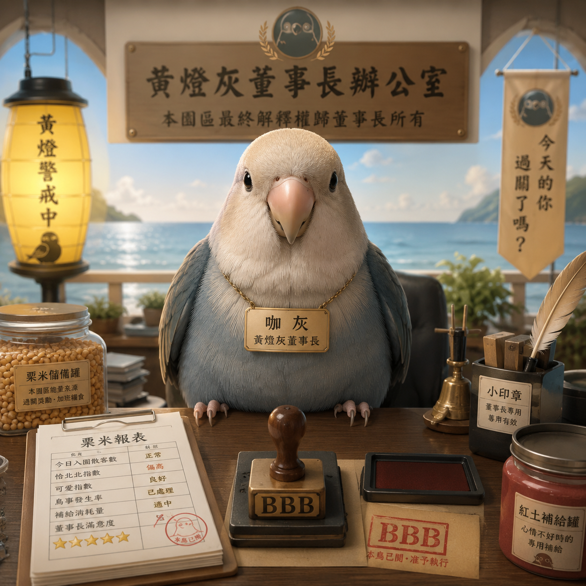

栗米審核
每一粒栗米都必須交代清楚。誤差超過 0.5 粒，即刻開會。
海邊莫蘭迪度假樂園 × 小鳥董事長治理系統
一隻住海邊、愛管秩序、會查帳的莫蘭迪色小鸚鵡
歡迎來到黃燈灰董事長主題樂園。
這裡有海風、栗米、紅土與柔和黃燈，
還有一位正在監督園區秩序的小鸚鵡董事長。
請注意：入園後請保持禮貌、帳目清楚，並避免對董事長說出任何會讓他啾唧暴怒的話。

董事長檔案
咖灰，黃燈灰董事長主題樂園最高負責鳥。羽色為高級莫蘭迪灰藍，臉頰自帶淡淡腮紅，常駐海邊辦公室，負責監督園區秩序、審核栗米預算、巡查人類行為。
他不是吉祥物。每一粒栗米都必須交代清楚。誤差超過 0.5 粒，即刻開會。
每日固定巡視海風大道、紅土補給站與人類反省區。
對可疑人類發出凝視、啾唧與必要之情緒警告。
董事長不接受隨便摸頭。但接受高品質、位置正確、力道適中的抓癢服務。
園區治理地圖
本園區由董事長親自規劃，每一處設施皆兼具療癒、秩序與不可違抗性。
園區最高權力中心。內有迷你辦公桌、黃燈、栗米報表與董事長專用小印章。
所有快樂，都要經過預算審核。負責管理園區所有栗米進出帳。任何未經登記的栗米，皆視為可疑資產。
本園不怕花錢，只怕人類說不清楚花去哪。海風吹來的地方，也是董事長巡邏的地方。遊客可在此散步、發呆、接受小鳥高層檢視。
你以為你在散步，其實你正在被巡查。提供董事長指定礦物質補給。非鳥類遊客請勿舔食。
董事長說可以的，才是合法補給。專為忘記放風、抓癢失敗、亂講話的人類設置。區內提供小板凳、海風吹與董事長凝視服務。
請坐下，想想你今天對咖灰做了什麼。當董事長怨念值過高，將啟動蜘蛛鳥模式。表現形式包括：倒掛、翻跟斗、爬籠頂、啾啾唧唧。
請勿直視蜘蛛鳥超過三秒，他會以為你知道自己錯在哪裡。治理事件紀錄
本區記錄董事長日常治理案例，供人類學習、反省與避免再次犯錯。
因前一日晚間適逢人類母親電視劇時段，董事長未能如期出籠巡園。隔日返家後，董事長於籠頂啟動蜘蛛鳥模式，進行翻跟斗、攀爬、倒掛與啾唧抗議。
人類於董事長進行高空巡查時，發表「掉下來買新的」之不當言論。該語句疑似暗示董事長具有可替換性，嚴重傷害本園最高管理層尊嚴。
董事長接受抓癢服務，但因人類手法不佳、位置錯誤或態度敷衍，導致董事長發出：BBBBBBB。
董事長審核台
點擊下方功能，接受董事長今日審核。結果僅供參考，但董事長本人非常認真。
尚未請示。董事長正在整理羽毛。
請輸入有效栗米數量，董事長不接受模糊帳目。
審核結果待命中。
請送出服務內容，董事長將親自評分。
官方公告欄
今日栗米支出異常，疑似人類私自加菜。請相關單位於黃燈亮起前說明。
本園區禁止稱董事長為「可以買新的東西」。違者將進入人類反省區。
董事長今日心情穩定。但不代表你可以亂來。
抓癢服務請確實執行。敷衍、摸錯、假裝有抓，皆視為重大服務瑕疵。
偵測到人類異常笑聲。疑似正在討論董事長私人行為，請立即說明。
董事長金句
栗米可以少，帳不能亂。
海風很自由，帳目要清楚。
你以為我在發呆，其實我在審核。
可愛不是免責條款。
人類最大的問題，就是以為小鳥不懂管理。
秩序不是限制，是鳥類美學。
本董事長不接受摸頭，但接受高品質抓癢。
授權商品部
本區未來將展示董事長授權之貼圖、明信片、桌布、吊飾與其他高級鳥類治理商品。
請注意：所有商品上架前，皆須經董事長親自啾唧審核。
授權商品部正在等待董事長蓋下小印章。
收錄董事長日常批示、查帳語錄與高冷啾唧。適合用於提醒朋友帳目要清楚。
紀念董事長因放風權益受損而啟動高空巡查的珍貴時刻。適合寄給忘記補栗米的人類。
當服務品質未達董事長標準時，請直接貼上本貼紙。無需多言，BBBBBBB 已代表一切。
莫蘭迪海邊、柔和黃燈與董事長查帳精神。適合所有需要秩序感的桌面。